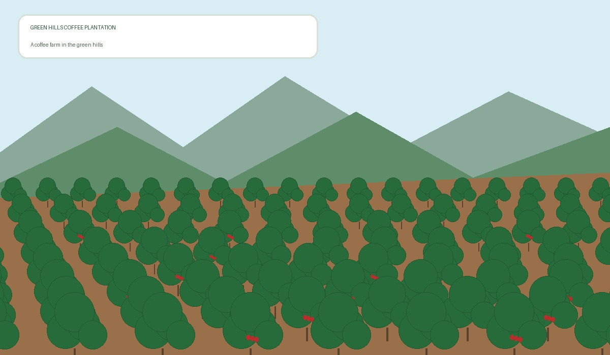

Welcome to Green Hills Coffee Plantation
Green Hills Coffee Plantation is a beautiful coffee farm dedicated to growing quality coffee. We welcome visitors, tourists and potential coffee buyers to learn about our coffee varieties and production process.
Our Coffee Farm

Learn About Coffee
Coffee Varieties Grown
- Arabica
- Robusta
- Batian
- Ruiru 11
Coffee Production Process
- Planting
- Growing and nurturing the coffee plants
- Harvesting ripe coffee cherries
- Processing and drying the coffee beans
- Packaging the coffee beans
Coffee Plantation Activities
- Pruning
- Pruning involves trimming coffee branches to encourage healthy growth and improve production.
- Harvesting
- Harvesting is the process of picking ripe coffee cherries from the coffee plants.
- Drying
- Drying involves reducing moisture in processed coffee beans before storage or further processing.
Contact Us
For more information about our coffee plantation, please contact us.
Contact the Plantation